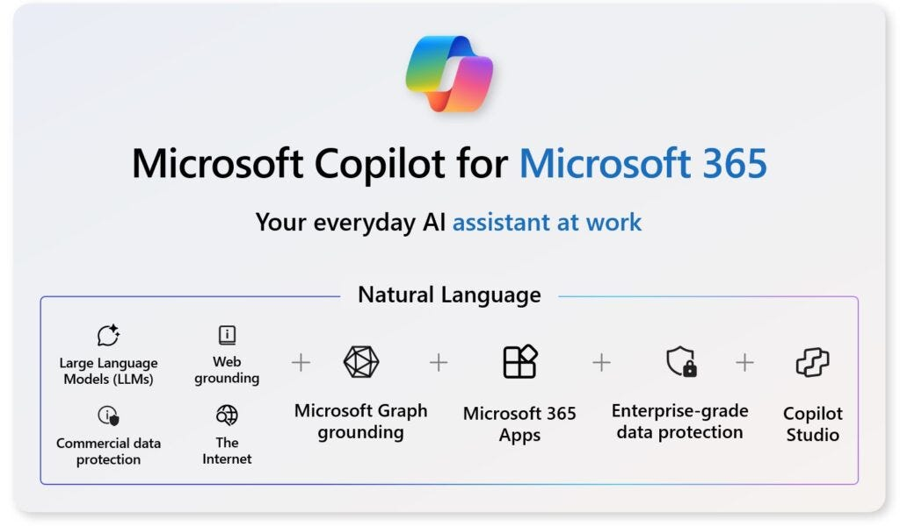

Microsoft integra Copilot en todas las apps de Office
Microsoft ha anunciado que su asistente de IA, Copilot, estará disponible en todas las aplicaciones de Office, mejorando la productividad de los usuarios.
Funcionalidades de Copilot
Desde redacción automática en Word hasta análisis de datos en Excel, Copilot promete simplificar tareas complejas...
Disponibilidad
La integración estará disponible para todos los usuarios a partir de julio de 2025.